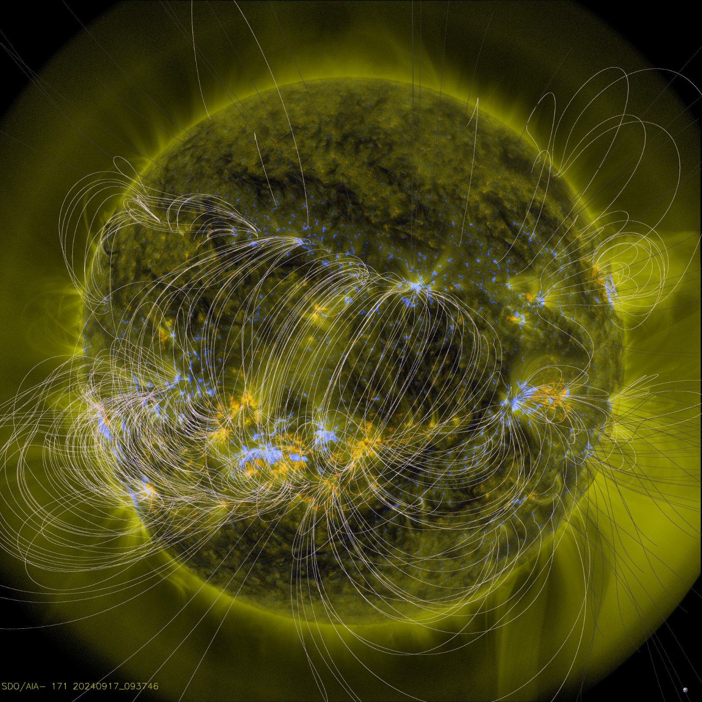

Las tormentas geomagnéticas son alteraciones en el campo magnético terrestre causadas por la interacción del viento solar con la magnetosfera. Estas perturbaciones pueden resultar de eyecciones de masa coronal (CME) o flujos de viento solar. Cuando las partículas cargadas del sol impactan el campo magnético, generan variaciones que pueden provocar auroras boreales y australes. Además, estas tormentas pueden afectar tecnologías como las comunicaciones satelitales, la navegación GPS y las redes eléctricas, ocasionando fallos e interrupciones.
The NASA Space Apps Collective is an expansion of the NASA Space Apps Challenge program that builds capacity and skills for the NASA Space Apps Community and the general public. Through year-round communications and workshops, participants will learn from each other as well as from NASA and space agency subject-matter-experts. With this knowledge, participants will be empowered to use NASA data to advance NASA mission priorities and to make a difference both locally and globally.The NASA Space Apps Collective operates independently while maintaining a complementary relationship with the NASA International Space Apps Challenge.